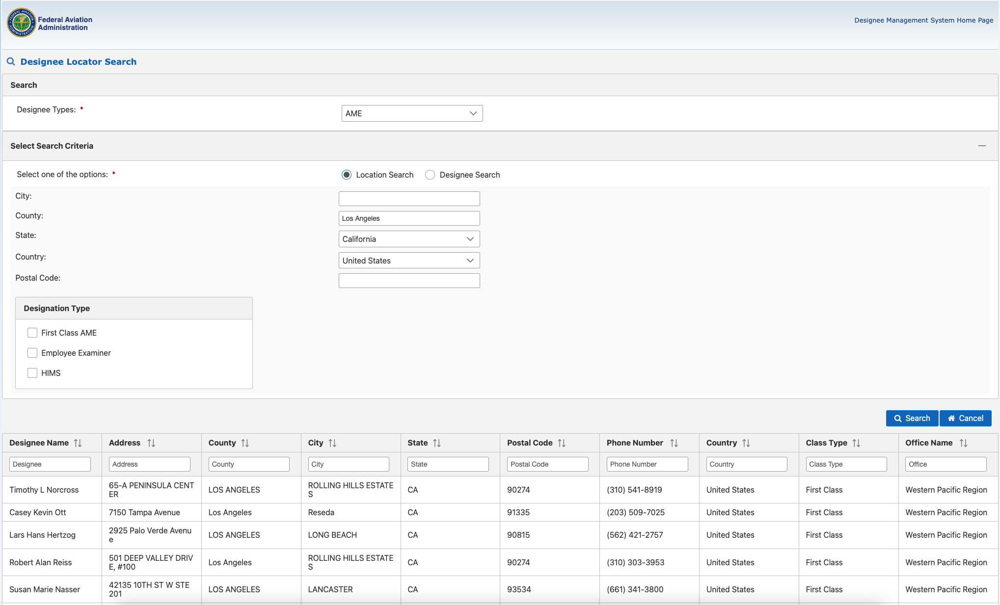

FAA Medical
Getting an FAA Medical Certificate

You will need to obtain at least a third-class FAA medical certificate prior to your first solo flight.
In most cases, the process for obtaining a medical certificate is straightforward, but if you have a medical condition, it can get fairly complicated. Even something like sleep apnea requires what is called a special issuance (SI) from the FAA.
I recommend that students start the process of obtaining a medical certificate concurrent with their first lesson. If they feel like they might have a condition that would impact the issuance of a medical, I strongly suggest that they begin the process of obtaining the medical before beginning flight training.
The Aircraft Owners and Pilots Association (AOPA) has an excellent reference for medical certification including a list of potentially disqualifying conditions and a medications database.
Obtaining the Third Class Medical
The process of obtaining a third class medical has three steps:
- Identify an Aviation Medical Examiner (AME)
- Receive a physical examination from the AME
- Obtain your certificate
Identify an AME
FAA Medical Certificates are issued by Aviation Medical Examiners (AMEs). An AME is a physician who has been designated by the FAA to conduct the examination and issue a medical certificate.
A list of AMEs can be found via the FAA Designee Management System. Use Chrome or Microsoft Edge for best results on this site.
The screenshot below shows how to request information on this form. You should select “AME” for “Designee Type” and then use “Location Search” for finding a list of AMEs in your area.

Some AMEs can be difficult to work with. So, it is best that you consult with fellow pilots or your instructor or flight school to get a sense of whom they might recommend.
Receive a physical examination from the AME
Once you have identified an AME, set up an appointment with them for an examination.
You will need to fill out the FAA MedXPress application online and submit it prior to your appointment. Also print and take a copy of the application with you.
Although the most current version is always at the MedXPress web site, a sample of the form can be viewed here. Pay particular attention to question 18 on the form.
When you visit the AME, s/he will conduct a thorough physical examination as prescribed by the FAA. The test will include a urinanalysis for diabetes, an eye exam, auditory tests and musculoskeletal exams.
Obtain your certificate
If the AME determines that you meet the eligibility criteria for issuance of a Third Class Medical, s/he will issue you a medical certificate on conclusion of the examination.
Sign and keep the certificate safe. You will need it for your solo flight and beyond.
Disqualifying Conditions and Special Issuance
If you have one or more medical conditions or are taking medications that the FAA considers disqualifying, you will need a Special Issuance.
The AOPA site contains a list of potentially disqualifying conditions. It is very comprehensive, but should not be considered a complete list.
If you have a disqualifying condition, you should plan on delays in obtaining your medical certificate. In most cases, the AME cannot issue your certificate and will need to defer the decision to the Civil Aerospace Medicine Institute in Oklahoma City.
It is in your best interest to discuss your situation with the AME prior to your formal examination. Most AMEs tend to oblige applicants and will often discuss the issues over the phone. Many of them will also advise the applicant on the evidence that will need to be provided in support of the request for special issuance.
Medical special issuances can take time - plan for delays of between 4 and 6 months from application submission to approval assuming that the FAA has no further requests for evidence.
If the examiners at CAMI determine that you meet the conditions for a special issuance, they will send you an approval letter that details the actions you will need to take to maintain the validity of your special issuance and, therefore, your medical certificate.
Third-party services
There are services that can help with your submission. They are expensive, but might be worth the cost if you have a complex condition.
The main benefit of these services is that they will do a thorough review of your application before it is submitted so that the chances that you are asked for additional evidence are greatly reduced. Often, delays in certification are caused by missing evidence. Therefore, these services are invaluable in ensuring that all possible evidence is included in your initial submission.
If you need to contact a third-party service, I can refer you to one that I have used in the past.
BasicMed
In 2017, the FAA, working in conjunction with AOPA, unveiled a major overhaul of the medical certification process for general aviation pilots called BasicMed.
BasicMed allows a pilot – who is not flying for compensation or hire – to operate an aircraft without having a current medical certificate in the USA. The limitations on the aircraft and passengers are:
- Maximum takeoff weight of not more than 6,000 pounds.
- A maximum of 6 occupants (pilot plus 5 passengers).
- Altitudes of up to 18,000 feet.
To qualify for BasicMed, a pilot should have had a valid FAA medical certificate issued after July 15, 2006, even if it was a special issuance and has since lapsed.
Due to the limitation that the pilot must have had a medical certificate issued after July 15, 2006, a new student pilot must obtain a medical certificate at least once via the regular FAA medical certification process detailed above.
However, once they have obtained their medical certificate, they can operate under BasicMed and are not required to go through the regular FAA medical certification process.
The steps for obtaining a BasicMed certificate are:
- Ensure you are eligible to fly under BasicMed.
- Undergo a comprehensive medical examination by a state-licensed physician who is already treating you.
- Complete an online medical education course and pass the test to obtain a course completion certificate.
- Keep a record of the completion certificate and the medical examination report in your logbook.
The AOPA BasicMed web site contains the details of what it would take to obtain and operate under BasicMed.
BasicMed renewal requirements
To maintain flying privileges under BasicMed, the pilot is required to:
- Study the online course and pass the test every 24 calendar months.
- Be examined by a state-licensed physician every 4 years to the day.
- Not develop a disqualifying condition during that time.
The common disqualifying conditions are listed in 14 CFR 68.9. The AOPA also has a page dedicated to common disqualifying conditions for BasicMed.
Summary
The process of obtaining a FAA medical certificate can be simple for those with an uncomplicated medical history. For those who are not so fortunate, it takes time, effort, and money to obtain certification. It is complicated and difficult, but not impossible. BasicMed offers a way for pilots with a complicated medical history to operate as pilot-in-command of an airplane as long as they are able to pass the medical examination conducted by their physician.